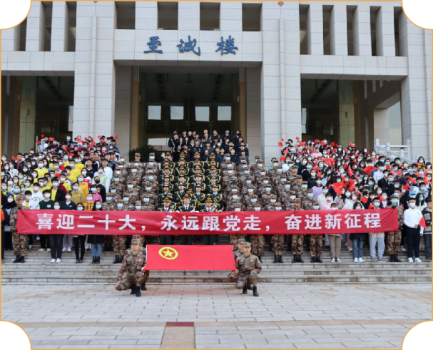
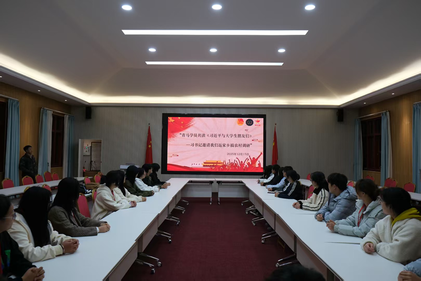
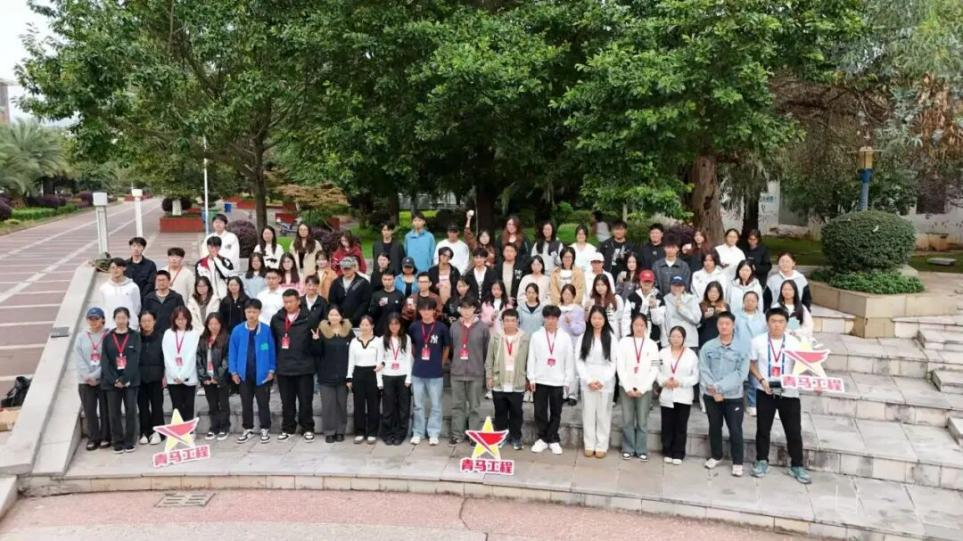
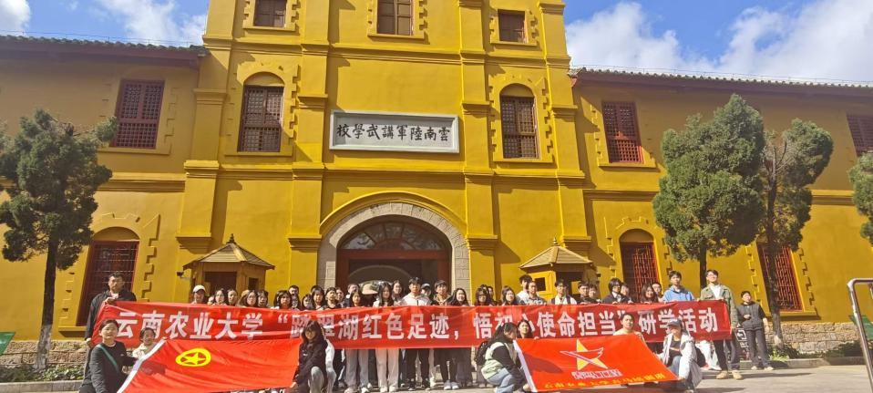
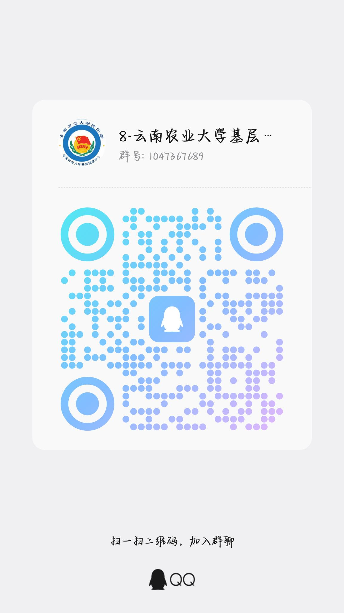

组织部
负责策划各类主题团课，筹备宣讲相关事宜，统筹课程内容与现场安排，落实团员思想引领相关团务工作。
策划
我们是谁
本中心成立于校园共青团工作提质升级阶段，以凝聚青年学生、夯实基层团组织建设为宗旨，面向全校各班级团支部开展常态化指导工作。
中心长期开展团务培训、主题团日策划、团员思想引领、青年志愿服务统筹等工作。近年来，中心围绕团支部规范化运营推进品牌建设，定期举办团干部技能训练营、红色主题实践活动、团员评议督导等项目，形成标准化团务指导、下沉式服务支部的工作特色，覆盖全校百余个团支部，服务数千名青年团员。
未来，中心将持续优化基层团务工作流程，创新青年思想教育形式，引导团员坚定理想信念，夯实校园共青团基层战斗堡垒，带动广大青年团员主动担当、积极奉献。
组织架构
负责策划各类主题团课，筹备宣讲相关事宜，统筹课程内容与现场安排，落实团员思想引领相关团务工作。
策划统筹社团物资采购管理，规划日常值班排班工作，做好物资登记与值班人员协调，保障社团日常事务平稳运转。
保障负责活动前期海报设计宣传，活动结束后撰写推送推文，同时完成奖状制作，全方位宣传社团各类活动。
传播活动剪影
从团务培训到红色实践，从主题团日到志愿服务。
每一帧都是团建工作的生动注脚。
品牌项目

01为深入学习贯彻习近平总书记关于青年工作的重要思想，落实习近平总书记对青年学子返家乡开展农村调研的殷切期望，引导青马学员在理论学习与实践调研中勇担青春使命，近日，云南农业大学第54期青马班全体学员在校友会堂301会议室举办读书分享会，基层团建中心成员和青马班学员围绕《习近平与大学生朋友们》第一卷第二篇《习书记邀请我们返家乡搞农村调研》展开了深入探讨与分享。
理论学习 · 思想引领校团委书记王蓉作开班动员。她强调，作为青马学员要加强理论学习，常态化读原著、学原文、悟原理，筑牢信仰之基，在理论学习中校准青春方向；要积极走出校园、深入基层，厚植为民情怀，在实践锻炼中锤炼品格、增长才干，把论文写在祖国大地上；要勇担时代使命，主动投身科技创新、乡村振兴、绿色发展、社会服务、卫国戍边等火热领域，引领带队更多青年投身强国建设、民族复兴伟大征程。
开班动员 · 使命担当
03秋意渐浓，书香满园。2025年10月25日基层团建中心联合校青马班在西校区小广场成功举办了"耕读时光"主题读书分享会。活动以书籍为媒，以自然为景，融合创意互动与深度分享，营造了浓厚的阅读氛围，引导青年学子在书香中启迪思想、交流感悟。
耕读文化 · 青年成长
04此次"踏翠湖红色足迹"研学活动在同学们的深思与共鸣中圆满落幕。它不仅是一次历史的回望，更是一次精神的整装与再出发。学校将持续深化"青马工程"的培养内涵，将红色资源转化为育人优势，引导广大青年学子自觉做习近平新时代中国特色社会主义思想的坚定信仰者和忠实践行者。学员们纷纷表示，必将把此次研学的感动与收获转化为刻苦学习、奋发作为的实际行动，让青春在为国家富强、民族复兴的伟大征程中绽放绚丽之花。
红色教育 · 精神传承